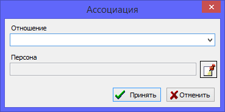

Ассоциации (отношения) предназначены для хранения в персональных записях специализированных ссылок на других людей, для выделения специфических родственных или социальных связей.
Например, в ассоциациях удобно хранить ссылки на крестных родителей или восприемников человека. Также можно выделять друзей и другие типы отношений, которые нельзя привести к обычным кровным связям мать/отец/ребенок/брат/сестра.
Ассоциации добавляются на одноименной закладке в основном диалоге редактирования персональной записи.

Также смотрите: Персоны.